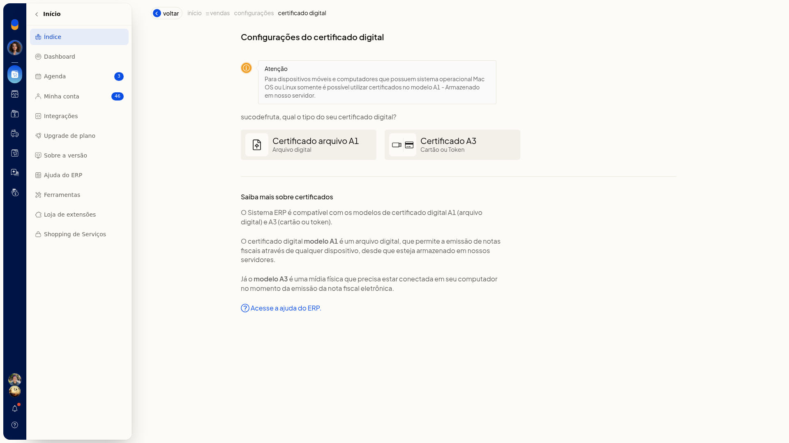
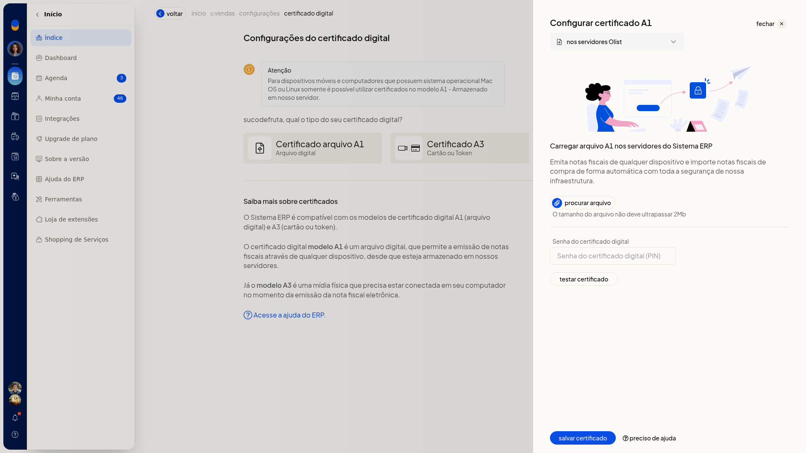
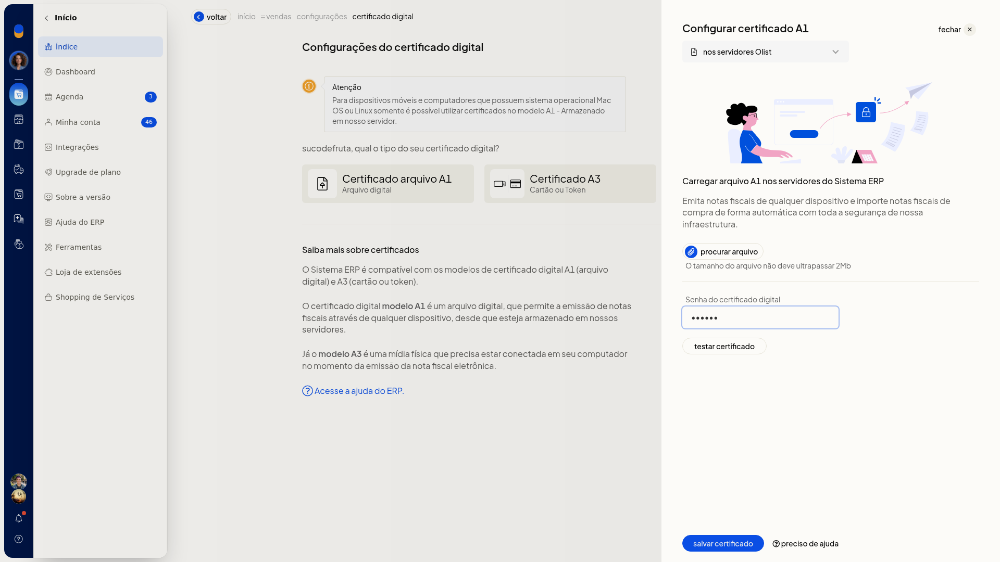
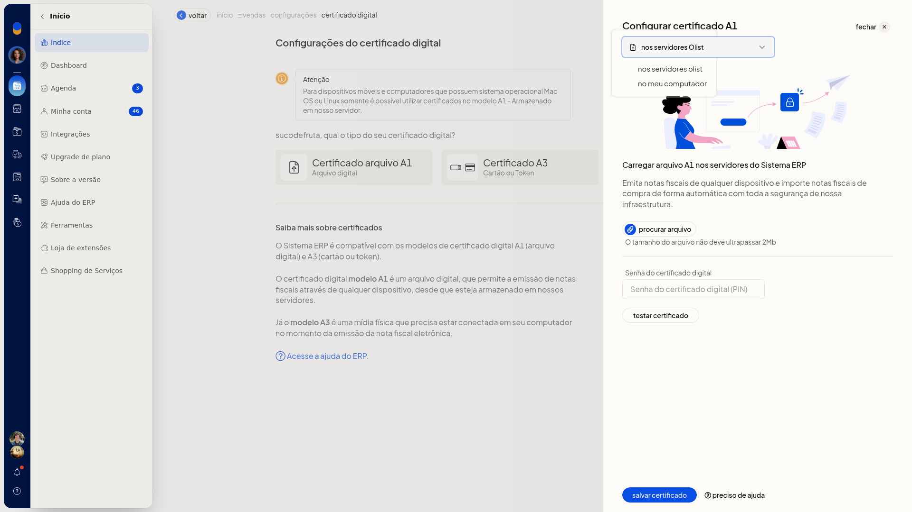
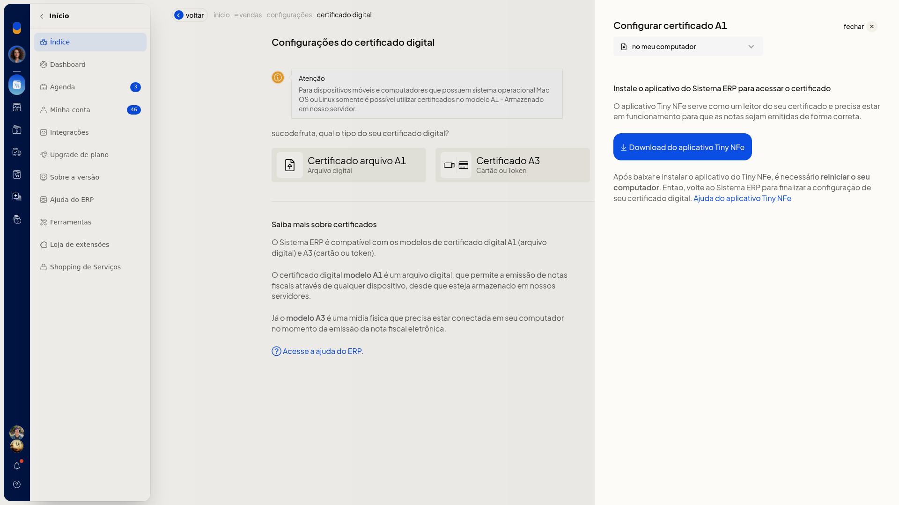
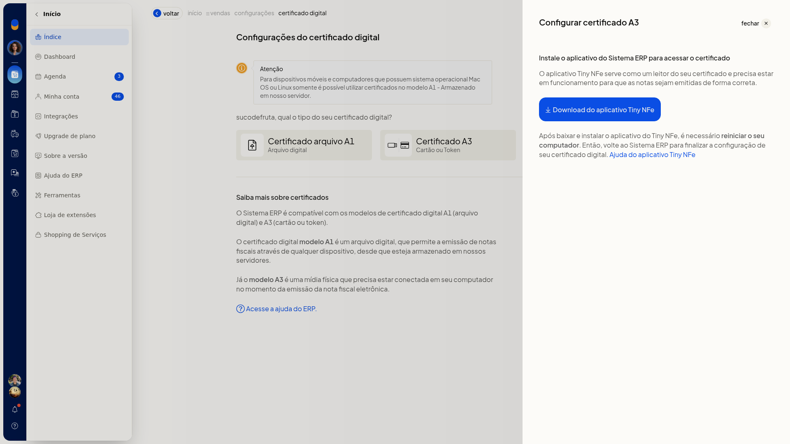

Configurar o certificado digital (A1 e A3)
A configuração do certificado digital no ERP da Olist prepara o certificado usado para emitir notas fiscais eletrônicas. Você escolhe o modelo A1 (arquivo digital), guardado nos servidores ou no próprio computador, ou o modelo A3 (cartão ou token), lido pelo aplicativo Tiny NFe.
Enquanto nada é salvo, o item Configuração do certificado digital, na aba Notas Fiscais, continua com o distintivo Configuração pendente.
Pré-requisitos
- Ter um certificado digital modelo A1 (arquivo) ou A3 (cartão ou token).
- A empresa precisa ter NF-e ou NFS-e.
- Se a opção não aparecer para você, peça acesso ao administrador da conta.
Importante
- Em celular e em computadores com Mac OS ou Linux, só é possível usar certificado A1 armazenado no servidor.
- O arquivo A1 enviado aos servidores tem tamanho máximo de 2 Mb. O campo aceita um único arquivo.
- Para manter o A1 no computador ou usar o A3, instale o aplicativo Tiny NFe, reinicie o computador e mantenha o aplicativo em funcionamento na emissão.
- O A3 precisa estar conectado ao computador no momento da emissão.
Instruções
Guardar o A1 nos servidores
-
Acesse Configurações > Configurações ERP > Notas Fiscais.
-
Clique em Configuração do certificado digital.

-
Escolha Certificado arquivo A1 (Arquivo digital).

-
Mantenha o armazenamento em nos servidores Olist.

-
Clique em procurar arquivo e selecione o arquivo do certificado.
-
Se o certificado tiver senha, preencha Senha do certificado digital.

-
Clique em testar certificado para validar o arquivo e a senha.
-
Clique em salvar certificado. O arquivo fica armazenado nos servidores e pode ser usado para emitir notas fiscais de qualquer dispositivo compatível, desde que o armazenamento seja nos servidores.
Guardar o A1 no computador
-
Acesse Configurações > Configurações ERP > Notas Fiscais e clique em Configuração do certificado digital.
-
Escolha Certificado arquivo A1 (Arquivo digital).
-
No seletor de armazenamento, troque nos servidores Olist por no meu computador.

-
Clique em Download do aplicativo Tiny NFe para obter o instalador.

-
Se precisar do passo a passo do aplicativo, clique em Ajuda do aplicativo Tiny NFe.
-
Instale o aplicativo, reinicie o computador e volte ao ERP para finalizar a configuração. O certificado permanece no computador, e o Tiny NFe precisa estar em funcionamento para a emissão das notas.
Usar o certificado A3
-
Acesse Configurações > Configurações ERP > Notas Fiscais e clique em Configuração do certificado digital.
-
Escolha Certificado A3 (Cartão ou Token).

-
Clique em Download do aplicativo Tiny NFe.
-
Se precisar do passo a passo do aplicativo, clique em Ajuda do aplicativo Tiny NFe.
-
Instale o aplicativo, reinicie o computador e volte ao ERP para finalizar a configuração. Mantenha o cartão ou token conectado no momento da emissão. O certificado é lido localmente pelo Tiny NFe enquanto o cartão ou token está conectado.
Resultado
Com o A1 salvo nos servidores, o certificado pode ser usado para emitir notas fiscais em qualquer dispositivo compatível. Com o A1 no computador ou com o A3, a emissão depende do Tiny NFe em funcionamento. No A3, o cartão ou token precisa estar conectado.
Enquanto o certificado não é salvo, Configuração do certificado digital segue com o distintivo Configuração pendente.
Informações adicionais
- A tela de tipo confirma a compatibilidade com A1 (arquivo digital) e A3 (cartão ou token) e explica o uso de cada modelo.
- Nesta tela não há opção de configurar o certificado por planilha nem por integração.
- A data de vencimento do certificado é exibida quando a empresa tem NF-e ou NFS-e.
- Acesse a ajuda do ERP abre o artigo de como configurar o certificado digital no ERP.
- Voltar retorna à lista da aba Notas Fiscais.